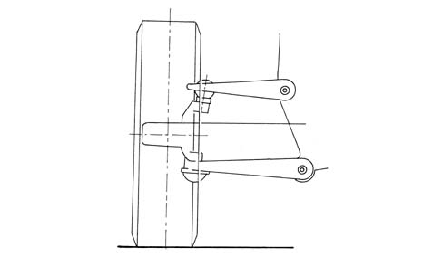
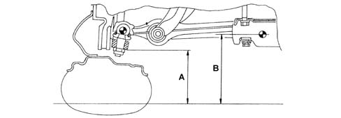
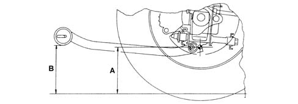
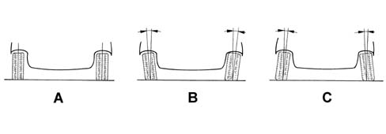
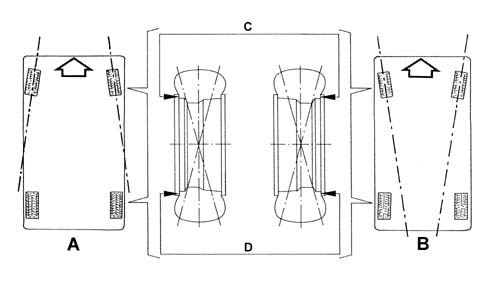

4450A WHEEL GEOMETRY
- Path
- Descriptions > 44 SUSPENSION AND WHEELS > 4450 WHEELS AND HUBS > 4450A WHEEL GEOMETRY
- Kind
- system description
- Applies to
- all engines; all production periods
- Interactive page
- https://sloeber94.github.io/elrnDB-aGt/en/#/125000385
Applies to: all engines; all production periods
DESCRIPTION
The wheel geometry is understood as the sum of the values and characteristic values of the suspension, which are applied at the point of the tyre touching the ground.
Point on the ground of the tyre
VIEW OF POINT ON THE GROUND OF TYRE

The point on the ground of the tyre is the centre of the area in contact between the tyre and ground.
The values and angles which determine the point on the ground are as stated below.
Car geometry
Which defines the difference in height (B-A)/(D-C) between the point A/C) (constant value) and point B/D (value varies depending on load).
Front car geometry

Rear car geometry

Camber
Examples of camber

A - Zero camber angle
B - Positive camber angle
C - Negative camber angle
Indicates the inclination of the wheels, determined by the angle formed between the axis passing through the halfway point of the tyre and the line perpendicular to the ground, which depending on this angle may be zero, positive or negative.
The camber angle on this car cannot be adjusted.
Wheel toe-in
Example of toe-in

A - Positive toe-in
B - Negative toe-in
Defines the angle formed by the horizontal axis of the wheels in relation to the longitudinal axis of the car, seen in plan view. When the horizontal axis tends to cross over in the direction of travel, the toe-in is said to be positive; when the crossover point is in the opposite direction, the toe-in is called negative or toe-out. The front wheels of the car have a negative toe-in, adjustable by adjust the power steering tie-rods, while the rear wheels have positive toe-in, adjustable by adjusting the attachment of the rear track control arm to the crossmember
Characteristic of working principle 4420B REAR SUSPENSION WISHBONES
.
The toe-in value is normally expressed in millimetres, and indicates the difference between the distances measured on the horizontal halfway point on the wheel rims, in front of and behind the hub (distance C and D in the figure).
To determine the tyre's point on the ground, in addition to what has been described, the following values are also involved:
- king pin angle;
- transversal ground arm;
- caster angle;
- longitudinal ground arm.
The camber angle and the above-mentioned values cannot be adjusted. For a description of these characteristics
Characteristic of working principle 4410 FRONT SUSPENSION
.